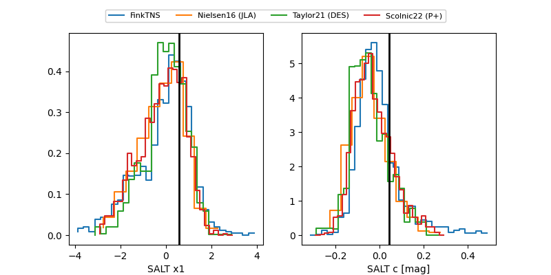

FINK: ZTF25ablymft
Lasair: ZTF25ablymft
ALeRCE: ZTF25ablymft
TNS: 2025wfm
YSE: 2025wfm
ZTF25ablymft (ztf,fink)
2025wfm (tns,yse)
equatorial (ra, dec) = (305.2262,-0.06723)
galactic (l, b) = (43.4964,-19.82846)

last ztfg=19.90, ztfr=19.79
1 ztfg, 2 ztfr detections